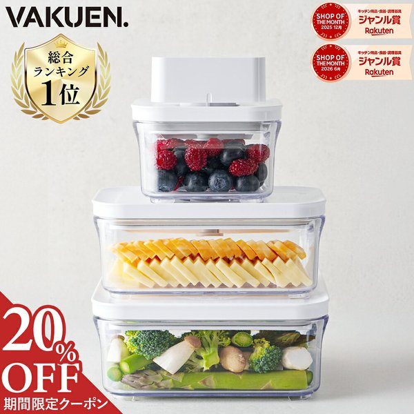
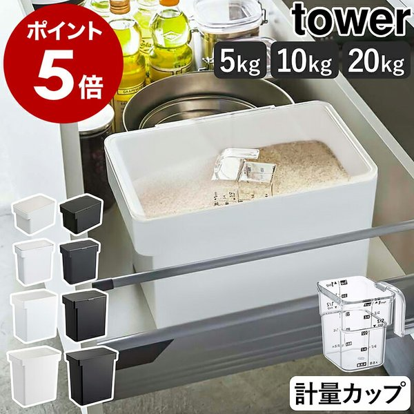
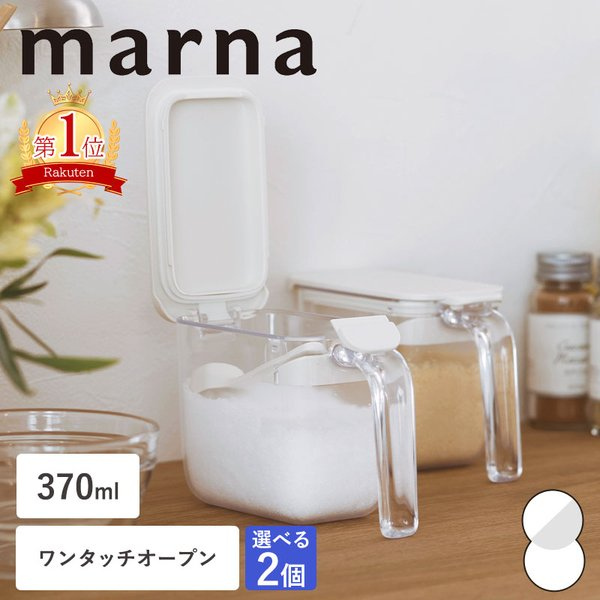
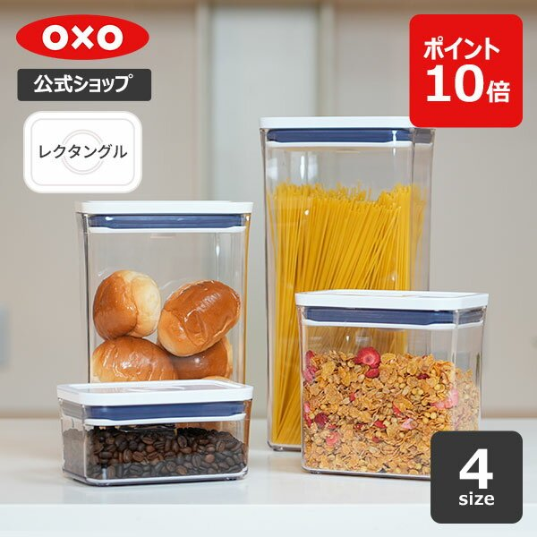
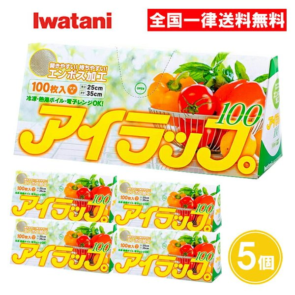
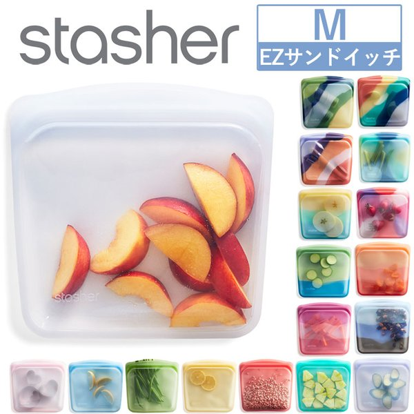
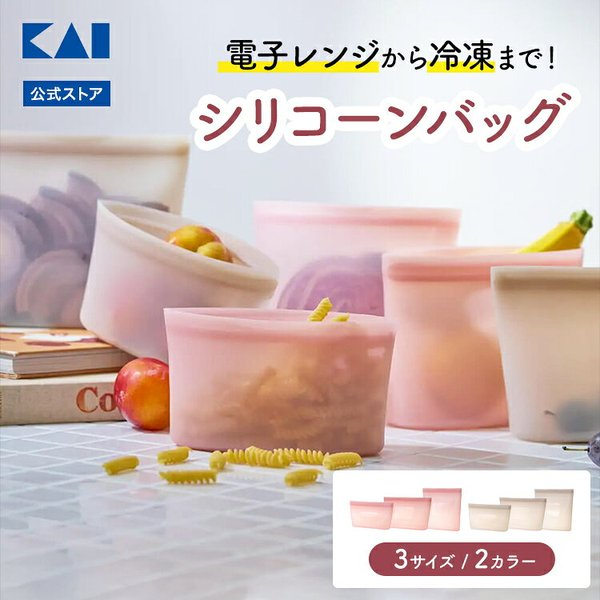
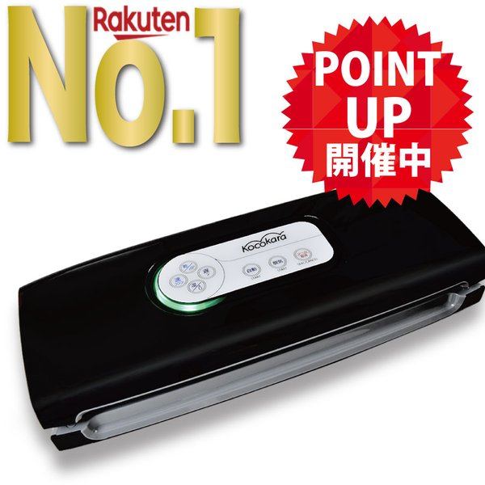
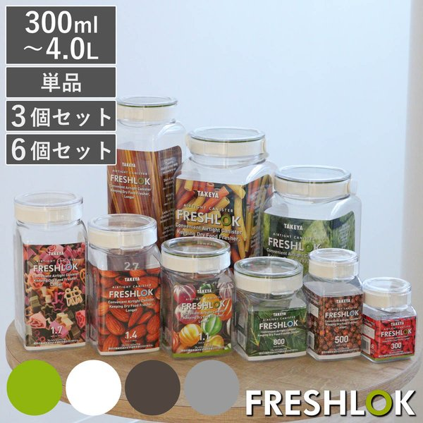

【2026年・年末の冷蔵庫整理と食品保存】耐熱ガラス保存容器・真空パック機・密閉米びつ・シリコン保存袋・アイラップ・調味料ポット10選｜iwaki・VAKUEN・山崎実業・マーナ・OXO・イワタニ・スタッシャー・貝印・Kocokara・フレッシュロックを実売価格で比較
年末は、買い出しの量が増えるのに冷蔵庫の空きは減っていきます。作り置きを入れる容器、米をしまう米びつ、調味料の置き場所。どれかひとつを入れ替えるだけで、冷蔵庫の詰め込み方が変わります。
選ぶ軸は3つです。「まず入れる容器」。作り置きはフタをしたままレンジにかけられる耐熱ガラス、乾物やパスタは密閉できるキャニスター、汁気のある物は真空パックが向きます。「次にしまう場所」。米びつと角型容器は、シンク下や冷蔵庫の内寸を測ってから選ぶと失敗しません。「最後に使い捨てとのバランス」。シリコン袋とポリ袋は洗って繰り返せるものと、湯煎できる薄手のものを使い分けると片付けが早くなります。なお、レビュー件数が50件に満たない商品は記事内に実数を明記しています。
本記事では、楽天市場で人気・高評価の食品保存・冷蔵庫整理グッズ10選を、実売価格とレビュー評価つきで写真付き紹介します。
- おすすめ10選 スペック・特徴比較表
- BEST 1｜耐熱ガラス保存容器 パック&レンジ 7点セット
- BEST 2｜真空保存容器 電動（コンテナ・タッパー）
- BEST 3｜tower 密閉米びつ 5kg（計量カップ付）
- BEST 4｜調味料ポット 2個セット（スプーン付き）
- BEST 5｜ポップコンテナ レクタングル（4サイズ）
- BEST 6｜アイラップ 100枚入 5個セット（ホルダー付き）
- BEST 7｜EZサンドイッチ Mサイズ（シリコーンバッグ）
- BEST 8｜シリコーン保存バッグ
- BEST 9｜真空パック機 fs-k001（吸引力85kPa・専用袋100枚付き）
- BEST 10｜保存容器 角型 300ml〜4L（選べるカラー）
- 【読者負担0円】買わなくても得する無料サービス
- まとめ：年末の冷蔵庫整理と食品保存10選の選び方
| 順位 | 商品名 | ブランド | 最大の特徴・おすすめ理由 | 総合評価 |
|---|---|---|---|---|
| BEST 1 | 耐熱ガラス保存容器 パック&レンジ 7点セット | iwaki（イワキ） | フタをしたままレンジにかけられる | 4.79 |
| BEST 2 | 真空保存容器 電動（コンテナ・タッパー） | VAKUEN（バクエン） | 電動で真空にできる | 4.73 |
| BEST 3 | tower 密閉米びつ 5kg（計量カップ付） | 山崎実業（YAMAZAKI） | 米袋のまま入れられる | 4.66 |
| BEST 4 | 調味料ポット 2個セット（スプーン付き） | マーナ（marna） | ワンタッチで開くフタ | 4.67 |
| BEST 5 | ポップコンテナ レクタングル（4サイズ） | OXO（オクソー） | ワンボタンで密閉できる | 4.72 |
| BEST 6 | アイラップ 100枚入 5個セット（ホルダー付き） | 岩谷マテリアル（イワタニ） | 湯煎も電子レンジもできる | 4.72 |
| BEST 7 | EZサンドイッチ Mサイズ（シリコーンバッグ） | Stasher（スタッシャー） | 電子レンジもオーブンも使える | 4.57 |
| BEST 8 | シリコーン保存バッグ | 貝印（KAI） | レンジ加熱と湯煎に対応 | 4.71 |
| BEST 9 | 真空パック機 fs-k001（吸引力85kPa・専用袋100枚付き） | Kocokara（ココカラ） | 吸引力85kPa | 4.62 |
| BEST 10 | 保存容器 角型 300ml〜4L（選べるカラー） | フレッシュロック（FRESHLOK） | ワンタッチで開閉できる | 4.63 |
耐熱ガラス保存容器 パック&レンジ 7点セット

耐熱ガラスの保存容器7点セットです。フタをしたまま電子レンジにかけられ、オーブン調理にも使えます。食べ終わったらそのまま洗えて、食洗機にも対応。サイズ違いで重ねて収納でき、作り置きの段取りが一気に楽になります。楽天市場での実売価格は約3,899円（2026年11月時点）。
- フタをしたままレンジにかけられる
- オーブンと食洗機に対応
- 7点セットで作り置きが回る
- ガラスなので、落とすと割れる
真空保存容器 電動（コンテナ・タッパー）

電動ポンプで容器の中を真空にできる保存容器です。空気を抜くことで酸化を抑え、野菜や作り置きの鮮度を長持ちさせます。BPAフリーで、電子レンジ・冷凍・食洗機に対応。フタのボタンを押すだけで密閉できる手軽さがあります。楽天市場での実売価格は約3,980円（2026年11月時点）。
- 電動で真空にできる
- 電子レンジと冷凍に対応
- BPAフリー
- 真空ポンプの充電が切れると、ただの容器になる
tower 密閉米びつ 5kg（計量カップ付）

5kg・10kg・20kgから選べる密閉米びつです。米袋のまま入れられる形状で、シンク下に収まるスリム設計。フタはワンタッチで開き、計量カップ付きなので炊く前に量る手間がありません。towerシリーズで見た目も揃います。楽天市場での実売価格は約2,970円（2026年11月時点）。
- 米袋のまま入れられる
- シンク下に収まるスリムさ
- 計量カップ付き
- 5kgサイズは、まとめ買いする家庭には容量が足りない
調味料ポット 2個セット（スプーン付き）

ワンタッチで開くフタの調味料ポット2個セットです。パッキン付きで湿気を防ぎ、専用スプーンですり切り量れます。塩、砂糖、コショウなどを入れてコンロ横に置けば、味付けのたびに袋を開け閉めせずに済みます。楽天市場での実売価格は約2,560円（2026年11月時点）。
- ワンタッチで開くフタ
- パッキン付きで湿気を防ぐ
- すり切りできるスプーン付き
- 2個セットなので、調味料の種類が多い家庭では買い足しが要る
ポップコンテナ レクタングル（4サイズ）

ワンボタンで密閉できる保存容器です。ミニ・ショート・ミディアム・トールの4サイズから選べ、角型なので冷蔵庫の中にすき間なく並べられます。パスタ、砂糖、コーヒー豆、麦茶パックなど、袋のままでは扱いにくい食材の保存に向きます。楽天市場での実売価格は約1,870円（2026年11月時点）。
- ワンボタンで密閉できる
- 4サイズから選べる
- 角型で並べやすい
- サイズを選ぶ前に、収納場所の高さを測っておく必要がある
アイラップ 100枚入 5個セット（ホルダー付き）

湯煎も電子レンジもできるポリ袋です。100枚入りが5個と専用ホルダーのセットで、袋のまま食材を漬けたり、下味をつけたり、小分けして冷凍したりできます。耐熱温度は110℃で、袋ごと鍋に入れて温められます。楽天市場での実売価格は約1,830円（2026年11月時点）。
- 湯煎も電子レンジもできる
- 100枚入りが5個でたっぷり
- 専用ホルダー付き
- 口を結ぶ手間があるので、密封性を求める用途には向かない
EZサンドイッチ Mサイズ（シリコーンバッグ）

シリコーン製の保存バッグです。ジッパーを閉じるだけで密閉でき、電子レンジ・オーブン・冷凍・湯煎に対応。洗って繰り返し使えるので、ラップや袋ごみを減らせます。サンドイッチやカットした果物をそのまま入れられます。楽天市場での実売価格は約1,760円（2026年11月時点）。
- 電子レンジもオーブンも使える
- 洗って繰り返し使える
- サンドイッチがそのまま入る
- レビューは30件と少なく、1枚あたりの価格はポリ袋より高い
シリコーン保存バッグ

貝印のシリコーン保存バッグです。食材を入れてレンジで加熱でき、冷凍と湯煎にも対応します。やわらかいシリコンなので、洗ったあとは畳んでしまえます。作り置きの小分けや、少量の余り物の保存に向いています。楽天市場での実売価格は約1,210円（2026年11月時点）。
- レンジ加熱と湯煎に対応
- 洗って繰り返し使える
- 畳んでしまえる
- 立てて置くと倒れやすく、汁気の多い物はこぼれやすい
真空パック機 fs-k001（吸引力85kPa・専用袋100枚付き）

家庭用の真空パック機です。吸引力85kPaで袋の中の空気を抜き、肉や魚の冷凍保存や作り置きの酸化を抑えます。乾燥物にも汁気のある物にも対応し、専用袋100枚が付属。年末にまとめて買った食材の小分けに向きます。楽天市場での実売価格は約14,980円（2026年11月時点）。
- 吸引力85kPa
- 乾燥物も汁気のある物も真空にできる
- 専用袋100枚付き
- 本体が大きく、置き場所を選ぶ
保存容器 角型 300ml〜4L（選べるカラー）

ワンタッチで開閉できる密閉保存容器です。300ml〜4Lのサイズを選べ、角型なので冷蔵庫の中にすき間なく並べられます。透明で中身が見え、日本製。同じシリーズで揃えると、パントリーの棚が揃います。楽天市場での実売価格は約574円（2026年11月時点）。
- ワンタッチで開閉できる
- 300ml〜4Lからサイズを選べる
- 透明で中身が見える
- 電子レンジに対応するかはサイズで違うので、購入前に確認する
この記事の商品を買う前に、まずは無料で得する選択肢をチェック。どれも登録・利用は0円で、無料期間中に解約すれば料金はかかりません。読みたい雑誌がある人、ポイントを貯めたい人、アンケートなら気軽という人、それぞれに合うものを選べます。
初回31日無料・無料期間中に解約すれば0円 → 楽天ポイントモール｜登録無料で毎日ポイ活
買い物なしでもポイントが貯まる無料サービス → 楽天インサイト｜アンケートに答えてポイント
登録無料・すきま時間のアンケートで貯まる → 楽天カード｜年会費永年無料
新規発行・年会費ずっと0円 →
4つのサービスの違いと使い分けは「出費0円で得する！買わずにポイントが貯まる無料サービス厳選4選」でまとめています。
💡 まとめ：年末の冷蔵庫整理と食品保存10選の選び方
食品保存の道具は、入れる・しまう・使い切るの3つで揃えると、年末の買い出しが怖くなくなります。入れる容器は、フタをしたままレンジにかけられるiwakiのパック&レンジ7点セット、真空で鮮度を保つVAKUEN、ワンボタンで密閉できるOXOのポップコンテナ、サイズを選べるフレッシュロックの角型。しまう道具は、米袋のまま入る山崎実業towerの密閉米びつ。調味料まわりは、パッキン付きで湿気を防ぐマーナの調味料ポット。使い切る道具は、湯煎もレンジもできるイワタニのアイラップ、洗って繰り返せるスタッシャーと貝印のシリコン保存袋、肉や魚を小分けできるKocokaraの真空パック機です。この10品で、冷蔵庫とパントリーの段取りが一度に整います。
楽天市場では「5と0のつく日」や「お買い物マラソン」などのキャンペーンに合わせて購入すると、ポイント還元が最大化してお得に手に入ります。ぜひチェックしてみてくださいね。